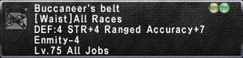

Level 75 reference · Zenith rules


StatisticsBuccaneer's Belt |
Other UsesResale Price: Cannot be sold to NPCs. |
How to Obtain
Einherjar
Price: 15,000 Ampoules of Therion Ichor Name Location Type Kilusha Nashmau (H-7) Einherjar Merchant
Adapted from Eden Wiki: Buccaneer's Belt · Contributors and history · CC BY-SA 4.0. Revision 45133. Layout, links and optional background text adapted for Zenith.